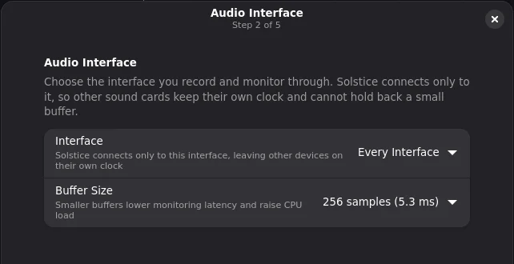

Download Solstice
Free and open source, for 64-bit Intel and AMD computers. Download the package for your system, then install it from the folder you saved it to.
Fedora
Download the RPMsudo dnf install ./solstice-fedora.x86_64.rpmPipeWire provides the JACK audio Solstice uses, and dnf installs it along with the package.
Debian 12
Download the .debsudo apt install ./solstice-debian12_amd64.debDebian 12's GTK is too old for Solstice, so this package carries its own GTK and libadwaita in /opt/solstice, used by Solstice alone.
When it first opens
Five short pages get your system ready to record:
- whether Solstice can run its audio ahead of other programs;
- the interface you record through, and its buffer size;
- where projects and exports are saved;
- the VST3, CLAP and LV2 plug-ins it found;
- Wine and yabridge, if you use Windows plug-ins.

Other systems and source
Solstice is built for Fedora and Debian 12 on x86_64. On another distribution, build it from source: the README lists what it needs.
What's new
Every release, with its notes, is on the releases page. Installing a newer package upgrades the one you have, and your projects and settings stay as they are.
Found a problem?
Report it on the issue tracker.
New to Solstice?
See how a band session goes, from plugging in to a finished master.